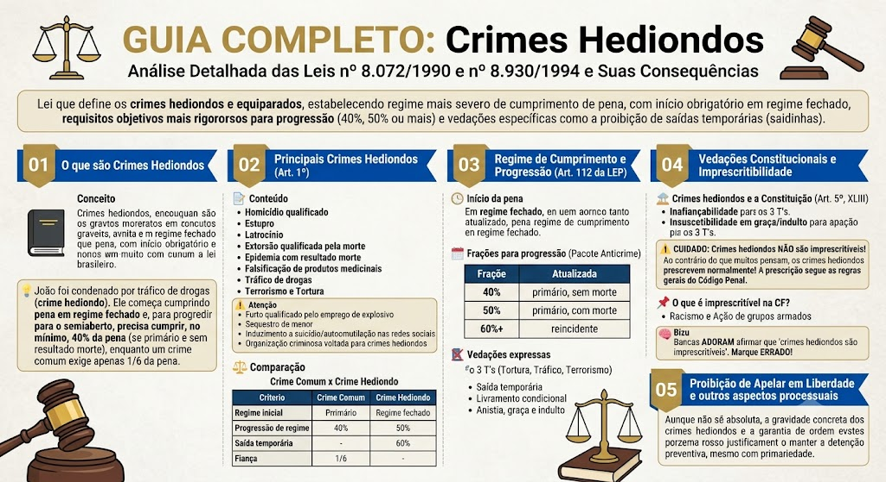

Crimes Hediondos — Lei 8.072/1990
BR / 2026-10-13 / compilada (texto vigente)
Consultar fonte oficial Baixar cópia local
A redação desta cópia corresponde à versão identificada acima. Consulte a fonte oficial para conferir alterações posteriores e o recorte do seu edital.
Roteiro de leitura
- Rol e equiparações
- Regras penais e processuais
- Leitura conjunta com a LEP
Índice dos 19 dispositivos
Lei nº 8.072 de 25/07/1990
LEI Nº 8.072, DE 25 DE JULHO DE 1990
Dispõe sobre os crimes hediondos, nos termos do art. 5º, inciso XLIII, da Constituição Federal, e determina outras providências.
O PRESIDENTE DA REPÚBLICA
Faço saber que o Congresso Nacional decreta e eu sanciono a seguinte Lei:
Art. 1º São considerados hediondos os seguintes crimes, todos tipificados no Decreto-Lei nº 2.848, de 7 de dezembro de 1940 - Código Penal, consumados ou tentados: *(“Caput” do artigo com redação dada pela Lei nº 8.930, de 6/9/1994)*
I - homicídio (art. 121), quando praticado em atividade típica de grupo de extermínio, ainda que cometido por 1 (um) só agente, e homicídio qualificado (art. 121, § 2º); *(Inciso acrescido pela Lei nº 8.930, de 6/9/1994,* *com redação dada pela Lei nº 15.159, de 3/7/2025)*
I-A - lesão corporal dolosa de natureza gravíssima (art. 129, § 2º) e lesão corporal seguida de morte (art. 129, § 3º), quando praticadas: *(Inciso acrescido pela Lei nº 13.142, de 6/7/2015,* *com redação dada pela Lei nº 15.159, de 3/7/2025)*
a) contra autoridade ou agente descrito nos arts. 142 e 144 da Constituição Federal ou integrantes do sistema prisional ou da Força Nacional de Segurança Pública, no exercício da função ou em decorrência dela, ou contra seu cônjuge, companheiro ou parente consanguíneo até terceiro grau, em razão dessa condição; *(Alínea acrescida pela Lei nº 15.134, de 6/5/2025, com redação dada pela Lei nº 15.159, de 3/7/2025)*
b) contra membro do Poder Judiciário, do Ministério Público, da Defensoria Pública ou da Advocacia Pública, de que tratam os arts. 131 e 132 da Constituição Federal, ou oficial de justiça, no exercício da função ou em decorrência dela, ou contra seu cônjuge, companheiro ou parente, inclusive por afinidade, até o terceiro grau, em razão dessa condição; ou *(Alínea acrescida pela Lei nº 15.134, de 6/5/2025, com redação dada pela Lei nº 15.159, de 3/7/2025)*
c) nas dependências de instituição de ensino; *(Alínea acrescida pela Lei nº 15.159, de 3/7/2025)*
I-B - feminicídio (art. 121-A); *(Inciso acrescido pela Lei nº 14.994, de 9/10/2024)*
I-C - vicaricídio (art. 121-B); *(Inciso acrescido pela Lei nº 15.384, de 9/4/2026)*
II - roubo: *(Inciso acrescido pela Lei nº 8.930, de 6/9/1994, e* *com nova redação dada pela Lei nº 13.964, de 24/12/2019, publicada na Edição Extra do DOU de 24/12/2019, em vigor 30 dias após a publicação)*
a) circunstanciado pela restrição de liberdade da vítima (art. 157, § 2º, inciso V); *(Alínea acrescida pela Lei nº 13.964, de 24/12/2019, publicada na Edição Extra do DOU de 24/12/2019, em vigor 30 dias após a publicação)*
b) circunstanciado pelo emprego de arma de fogo (art. 157, § 2º-A, inciso I) ou pelo emprego de arma de fogo de uso proibido ou restrito (art. 157, § 2º-B); *(Alínea acrescida pela Lei nº 13.964, de 24/12/2019, publicada na Edição Extra do DOU de 24/12/2019, em vigor 30 dias após a publicação)*
c) qualificado pelo resultado lesão corporal grave ou morte (art. 157, § 3º); *(Alínea acrescida pela Lei nº 13.964, de 24/12/2019, publicada na Edição Extra do DOU de 24/12/2019, em vigor 30 dias após a publicação)*
III - extorsão qualificada pela restrição da liberdade da vítima, ocorrência de lesão corporal ou morte (art. 158, § 3º); *(Inciso acrescido pela Lei nº 8.930, de 6/9/1994, e* *com nova redação dada pela Lei nº 13.964, de 24/12/2019, publicada na Edição Extra do DOU de 24/12/2019, em vigor 30 dias após a publicação)*
IV - extorsão mediante seqüestro e na forma qualificada (art. 159, *caput*, e §§ lº, 2º e 3º); *(Inciso acrescido pela Lei nº 8.930, de 6/9/1994)*
V - estupro (art. 213, *caput* e §§ 1º e 2º); *(Inciso acrescido pela Lei nº 8.930, de 6/9/1994, e com nova redação dada pela Lei nº 12.015, de 7/8/2009)*
VI - estupro de vulnerável (art. 217-A, *caput* e §§ 1º, 2º, 3º e 4º); *(Inciso acrescido pela Lei nº 8.930, de 6/9/1994, e com nova redação dada pela Lei nº 12.015, de 7/8/2009)*
VII - epidemia com resultado morte (art. 267, § 1º). *(Inciso acrescido pela Lei nº 8.930, de 6/9/1994)*
VII-A - *(VETADO na Lei nº 9.695, de 20/8/1998)*
VII-B - falsificação, corrupção, adulteração ou alteração de produto destinado a fins terapêuticos ou medicinais (art. 273, *caput* e § 1º, § 1º-A e § 1º-B, com a redação dada pela Lei nº 9.677, de 2 de julho de 1998); *(Inciso acrescido pela Lei nº 9.695, de 20/8/1998)*
VIII - favorecimento da prostituição ou de outra forma de exploração sexual de criança ou adolescente ou de vulnerável (art. 218-B, *caput*, e §§ 1º e 2º). *(Inciso acrescido pela Lei nº 12.978, de 21/5/2014)*
IX - furto qualificado pelo emprego de explosivo ou de artefato análogo que cause perigo comum (art. 155, § 4º-A); *(Inciso acrescido pela Lei nº 13.964, de 24/12/2019, publicada na Edição Extra do DOU de 24/12/2019, em vigor 30 dias após a publicação)*
X - induzimento, instigação ou auxílio a suicídio ou a automutilação realizados por meio da rede de computadores, de rede social ou transmitidos em tempo real (art. 122, *caput* e § 4º); *(Inciso acrescido pela Lei nº 14.811, de 12/1/2024)*
XI - sequestro e cárcere privado cometido contra menor de 18 (dezoito) anos (art. 148, § 1º, inciso IV); *(Inciso acrescido pela Lei nº 14.811, de 12/1/2024)*
XII - tráfico de pessoas cometido contra criança ou adolescente (art. 149-A, *caput*, incisos I a V, e § 1º, inciso II). *(Inciso acrescido pela Lei nº 14.811, de 12/1/2024)*
Parágrafo único. Consideram-se também hediondos, tentados ou consumados: *(Parágrafo único acrescido pela Lei nº 8.930, de 6/9/1994, e com nova redação dada pela Lei nº 13.964, de 24/12/2019, publicada na Edição Extra do DOU de 24/12/2019, em vigor 30 dias após a publicação)*
I - o crime de genocídio, previsto nos arts. 1º, 2º e 3º da Lei nº 2.889, de 1º de outubro de 1956; *(Inciso acrescido pela Lei nº 13.964, de 24/12/2019, publicada na Edição Extra do DOU de 24/12/2019, em vigor 30 dias após a publicação)*
II - o crime de posse ou porte ilegal de arma de fogo de uso proibido, previsto no art. 16 da Lei nº 10.826, de 22 de dezembro de 2003; *(Inciso acrescido pela Lei nº 13.964, de 24/12/2019, publicada na Edição Extra do DOU de 24/12/2019, em vigor 30 dias após a publicação)*
III - o crime de comércio ilegal de armas de fogo, previsto no art. 17 da Lei nº 10.826, de 22 de dezembro de 2003; *(Inciso acrescido pela Lei nº 13.964, de 24/12/2019, publicada na Edição Extra do DOU de 24/12/2019, em vigor 30 dias após a publicação)*
IV - o crime de tráfico internacional de arma de fogo, acessório ou munição, previsto no art. 18 da Lei nº 10.826, de 22 de dezembro de 2003; *(Inciso acrescido pela Lei nº 13.964, de 24/12/2019, publicada na Edição Extra do DOU de 24/12/2019, em vigor 30 dias após a publicação)*
V - o crime de organização criminosa, quando direcionado à prática de crime hediondo ou equiparado. *(Inciso acrescido pela Lei nº 13.964, de 24/12/2019, publicada na Edição Extra do DOU de 24/12/2019, em vigor 30 dias após a publicação)*
VI - os crimes previstos no Decreto-Lei nº 1.001, de 21 de outubro de 1969 (Código Penal Militar), que apresentem identidade com os crimes previstos no art. 1º desta Lei. *(Inciso acrescido pela Lei nº 14.688, de 20/9/2023, publicada no DOU de 21/9/2023, em vigor 60 dias após a publicação)*
VII - os crimes previstos no *caput* e nos §§ 1º e 2º do art. 240, no *caput* e no parágrafo único do art. 241, no *caput* e nos §§ 1º e 3º do art. 241-A, no *caput* do art. 241- B, no *caput* e nos §§ 1º e 2º do art. 241-D e no *caput* e no § 1º do art. 244-A da Lei nº 8.069, de 13 de julho de 1990 (Estatuto da Criança e do Adolescente); *(Inciso acrescido pela Lei nº 14.811, de 12/1/2024*, *com redação dada pela Lei nº 15.487, de 6/8/2026)*
VIII - os crimes de domínio social estruturado e de favorecimento ao domínio social estruturado, previstos no *caput* e nos §§ 1º e 3º do art. 2º e no art. 3º da lei que institui o marco legal do combate ao crime organizado no Brasil. *(Inciso acrescido pela Lei nº 15.358, de 24/3/2026)*
Art. 2º Os crimes hediondos, a prática da tortura, o tráfico ilícito de entorpecentes e drogas afins e o terrorismo são insuscetíveis de:
I - anistia, graça e indulto;
II - fiança. *(Inciso com redação dada pela Lei nº 11.464, de 28/3/2007)*
§ 1º A pena por crime previsto neste artigo será cumprida inicialmente em regime fechado. *(Parágrafo com redação dada pela Lei nº 11.464, de 28/3/2007)*
§ 2º *(Parágrafo acrescido pela Lei nº 11.464, de 28/3/2007, e revogado pela Lei nº 13.964, de 24/12/2019, publicada na Edição Extra do DOU de 24/12/2019, em vigor 30 dias após a publicação)*
§ 3º Em caso de sentença condenatória, o juiz decidirá fundamentadamente se o réu poderá apelar em liberdade. *(Primitivo § 2º renumerado pela Lei nº 11.464, de 28/3/2007)*
§ 4º A prisão temporária, sobre a qual dispõe a Lei nº 7.960, de 21 de dezembro de 1989, nos crimes previstos neste artigo, terá o prazo de 30 (trinta) dias, prorrogável por igual período em caso de extrema e comprovada necessidade. *(Primitivo § 3º renumerado pela Lei nº 11.464, de 28/3/2007)*
Art. 3º A União manterá estabelecimentos penais, de segurança máxima, destinados ao cumprimento de penas impostas a condenados de alta periculosidade, cuja permanência em presídios estaduais ponha em risco a ordem ou incolumidade pública.
Art. 4º (VETADO).
Art. 5º Ao art. 83 do Código Penal é acrescido o seguinte inciso:
“Art. 83. ........................................................................................
.......................................................................................................
V - cumprido mais de dois terços da pena, nos casos de condenação por crime hediondo, prática da tortura, tráfico ilícito de entorpecentes e drogas afins, e terrorismo, se o apenado não for reincidente específico em crimes dessa natureza.”
Art. 6º Os arts. 157, § 3º; 159, *caput* e seus §§ 1º, 2º e 3º; 213; 214; 223, *caput* e seu parágrafo único; 267, *caput* e 270, *caput*, todos do Código Penal, passam a vigorar com a seguinte redação:
“Art. 157. .......................................................................................
§ 3º Se da violência resulta lesão corporal grave, a pena é de reclusão, de cinco a quinze anos, além da multa; se resulta morte, a reclusão é de vinte a trinta anos, sem prejuízo da multa.
..............................................................................................................
Art. 159. ...............................................................................................
Pena - reclusão, de oito a quinze anos.
§ 1º .......................................................................................................
Pena - reclusão, de doze a vinte anos.
§ 2º ........................................................................................................
Pena - reclusão, de dezesseis a vinte e quatro anos.
§ 3º ......................................................................................................
Pena - reclusão, de vinte e quatro a trinta anos.
....................................................................................................
Art. 213. .....................................................................................
Pena - reclusão, de seis a dez anos.
Art. 214. ....................................................................................
Pena - reclusão, de seis a dez anos.
....................................................................................................
Art. 223. .....................................................................................
Pena - reclusão, de oito a doze anos.
Parágrafo único. .........................................................................
Pena - reclusão, de doze a vinte e cinco anos.
....................................................................................................
Art. 267. .....................................................................................
Pena - reclusão, de dez a quinze anos.
.....................................................................................................
Art. 270. .....................................................................................
Pena - reclusão, de dez a quinze anos.
....................................................................................................”
Art. 7º Ao art. 159 do Código Penal fica acrescido o seguinte parágrafo:
“Art. 159. .......................................................................................
........................................................................................................
§ 4º Se o crime é cometido por quadrilha ou bando, o co-autor que denunciá-lo à autoridade, facilitando a libertação do seqüestrado, terá sua pena reduzida de um a dois terços.”
Art. 8º Será de três a seis anos de reclusão a pena prevista no art. 288 do Código Penal, quando se tratar de crimes hediondos, prática da tortura, tráfico ilícito de entorpecentes e drogas afins ou terrorismo.
Parágrafo único. O participante e o associado que denunciar à autoridade o bando ou quadrilha, possibilitando seu desmantelamento, terá a pena reduzida de um a dois terços.
Art. 9º As penas fixadas no art. 6º para os crimes capitulados nos arts. 157, § 3º, 158, § 2º, 159, *caput* e seus §§ 1º, 2º e 3º, 213, *caput*, e sua combinação com o art. 223, *caput* e parágrafo único, 214 e sua combinação com o art. 223, *caput* e parágrafo único, todos do Código Penal, são acrescidas de metade, respeitado o limite superior de trinta anos de reclusão, estando a vítima em qualquer das hipóteses referidas no art. 224 também do Código Penal.
Art. 10. O art. 35 da Lei nº 6.368, de 21 de outubro de 1976, passa a vigorar acrescido de parágrafo único, com a seguinte redação:
“Art. 35. ..............................................................................................
Parágrafo único. Os prazos procedimentais deste Capítulo serão contados em dobro quando se tratar dos crimes previstos nos arts. 12, 13 e 14.”
Art. 11. (VETADO).
Art. 12. Esta Lei entra em vigor na data de sua publicação.
Art. 13. Revogam-se as disposições em contrário.
Brasília, 25 de julho de 1990; 169º da Independência e 102º da República.
FERNANDO COLLOR
Bernardo Cabral
Material de estudo: Lei nº 8.072/1990 e Lei nº 8.930/1994 — Crimes Hediondos
Material complementar · Ver fonte no GitHub
O que são Crimes Hediondos
Definição legal
Crimes hediondos são aqueles considerados os mais graves pela legislação brasileira, previstos na Lei nº 8.072/1990 (com alterações da Lei nº 8.930/1994 e posteriores). Por sua extrema gravidade e repulsa social, recebem tratamento processual e penal mais rigoroso, com restrições a benefícios como progressão de regime, livramento condicional e saídas temporárias.
Situação prática
João foi condenado por tráfico de drogas (crime hediondo). Ele começa cumprindo pena em regime fechado e, para progredir para o semiaberto, precisa cumprir, no mínimo, 40% da pena (se primário e sem resultado morte), enquanto um crime comum exige apenas 1/6 da pena.
Principais Crimes Hediondos (Art. 1º)
Rol de crimes hediondos e equiparados
A Lei 8.072/1990 e legislações posteriores definem como hediondos os seguintes crimes, entre outros:
- Homicídio qualificado (art. 121, § 2º, do CP)
- Estupro (art. 213) e estupro de vulnerável (art. 217-A)
- Latrocínio (art. 157, § 3º, in fine)
- Extorsão qualificada pela morte (art. 158, § 2º)
- Epidemia com resultado morte (art. 267, § 1º)
- Falsificação, corrupção, adulteração ou alteração de produto destinado a fins terapêuticos ou medicinais (art. 273)
- Tráfico de drogas (Lei 11.343/2006, salvo a conduta do art. 28 — usuário)
- Terrorismo e Sabotagem (Lei 13.260/2016)
- Tortura (Lei 9.455/1997) — embora não esteja expressa no rol da Lei 8.072, possui tratamento equivalente por força de lei específica e da CF/88.
Atualizações recentes no rol (Pacote Anticrime)
Leis recentes (especialmente a Lei 13.964/2019 e a 14.132/2021) acrescentaram importantes figuras ao rol de crimes hediondos, são elas:
- Furto qualificado pelo emprego de explosivo (art. 155, § 4º-A, do CP)
- Sequestro e cárcere privado cometido contra menor de 18 anos (art. 148, § 1º, IV, do CP)
- Induzimento, instigação ou auxílio a suicídio ou automutilação por meio de redes sociais (art. 122, caput e § 4º, do CP)
- Organização criminosa voltada para a prática de crime hediondo (em certas condições, Lei 12.850/2013)
Quadro comparativo: Crime Comum x Crime Hediondo
| Critério | Crime Comum | Crime Hediondo |
|---|---|---|
| Regime inicial de cumprimento | Aberto, semiaberto ou fechado (conforme a pena) | Obrigatoriamente fechado |
| Progressão de regime (requisito objetivo) | 1/6 da pena (art. 112, LEP) | 40% (primário, sem morte) / 50% (primário, com morte) / 60%+ (reincidente) |
| Saída temporária (saidinha) | Permitida (se preencher requisitos) | Vedada (não tem direito) |
| Fiança | Cabível em alguns casos | Inafiançável (vedada) |
Regime de Cumprimento e Progressão (Art. 112 da LEP)
Início da pena
O condenado por crime hediondo deverá iniciar o cumprimento da pena em regime fechado, não sendo possível a fixação de regime menos severo desde o início, ainda que a pena aplicada seja pequena.
Frações para progressão — ATUALIZAÇÃO (Pacote Anticrime)
Com a Lei nº 13.964/2019, as frações de progressão para crimes hediondos foram alteradas. Não se usa mais a fração de 2/5 (regra antiga). Hoje, os percentuais são os seguintes, conforme o art. 112 da LEP:
- 40% (dois quintos) da pena — para condenado primário, se o crime não tiver resultado morte.
- 50% (metade) da pena — para condenado primário, se o crime tiver resultado morte (ex.: homicídio qualificado, latrocínio).
- 60% (três quintos) ou mais — para reincidentes em crime hediondo ou equiparado, podendo chegar a 70% em casos específicos.
Vedações expressas
Além da progressão mais rigorosa, o regime de cumprimento de crimes hediondos veda:
- Saída temporária (saidinha) — não tem direito a sair nos feriados ou para visitar família.
- Livramento condicional — em regra, é vedado ou exige cumprimento de fração muito superior à dos crimes comuns.
- Anistia, graça e indulto — para os crimes de tortura, tráfico de drogas e terrorismo (os 3 T's), são insuscetíveis de anistia, graça e indulto (art. 5º, XLIII, CF).
Vedações Constitucionais e Imprescritibilidade (⚠️ CORREÇÃO)
Crimes hediondos e a Constituição (Art. 5º, XLIII)
A Constituição Federal, em seu art. 5º, inciso XLIII, estabelece que a lei considerará crimes inafiançáveis e insuscetíveis de anistia, graça e indulto a prática de tortura, tráfico ilícito de entorpecentes e terrorismo (os 3 T's). Essas garantias se aplicam integralmente aos crimes hediondos correspondentes.
⚠️ CUIDADO: Crimes hediondos NÃO são imprescritíveis!
Atenção máxima: Ao contrário do que muitos pensam, os crimes hediondos prescrevem normalmente! O fato de serem inafiançáveis e terem regime mais severo não os torna imprescritíveis. A prescrição segue as regras gerais do Código Penal (contagem do prazo com base na pena máxima cominada em abstrato ou na pena aplicada).
📌 O que é imprescritível na CF? Apenas duas hipóteses (art. 5º, XLII e XLIV):
1. O racismo (e injúria racial, por equiparação).
2. A ação de grupos armados (civis ou militares) contra a ordem constitucional e o Estado Democrático.
Dica de prova
Bancas ADORAM afirmar que 'crimes hediondos são imprescritíveis'. Marque ERRADO! Lembre-se: hediondos prescrevem. A imprescritibilidade é privilégio exclusivo do racismo e da ação de grupos armados.
Proibição de Apelar em Liberdade e outros aspectos processuais
Prisão preventiva e recurso em liberdade
Embora a lei não proíba de forma absoluta o recurso em liberdade, a jurisprudência dos tribunais superiores (STF e STJ) é firme no sentido de que, em crimes hediondos, a gravidade concreta do delito e a garantia da ordem pública justificam a manutenção da prisão preventiva, sendo vedada a concessão de liberdade provisória com base unicamente na primariedade ou nos bons antecedentes.
Prisão Temporária e Crimes Hediondos (Lei nº 7.960/1989)
Prazo para crimes hediondos e equiparados
Nos crimes hediondos e equiparados (incluindo tortura, tráfico de drogas e terrorismo), o prazo da prisão temporária é de 5 (cinco) dias, prorrogável por igual período (mais 5 dias) em caso de extrema e comprovada necessidade.
⚠️ Diferença importante: na Lei de Organização Criminosa (Lei 12.850/2013), o prazo é de 10 (dez) dias, prorrogável por igual período (mais 10 dias). Não confunda os prazos!
📌 Regra geral (art. 2º da Lei 7.960/89): para os demais crimes, o prazo é de 5 dias, prorrogável por mais 5 dias (total 10).
Memorização
🔹 Hediondos + equiparados: 5+5 dias.
🔹 Organização criminosa: 10+10 dias.
🔹 Demais crimes: 5+5 dias (regra geral).
Mapa-mental
